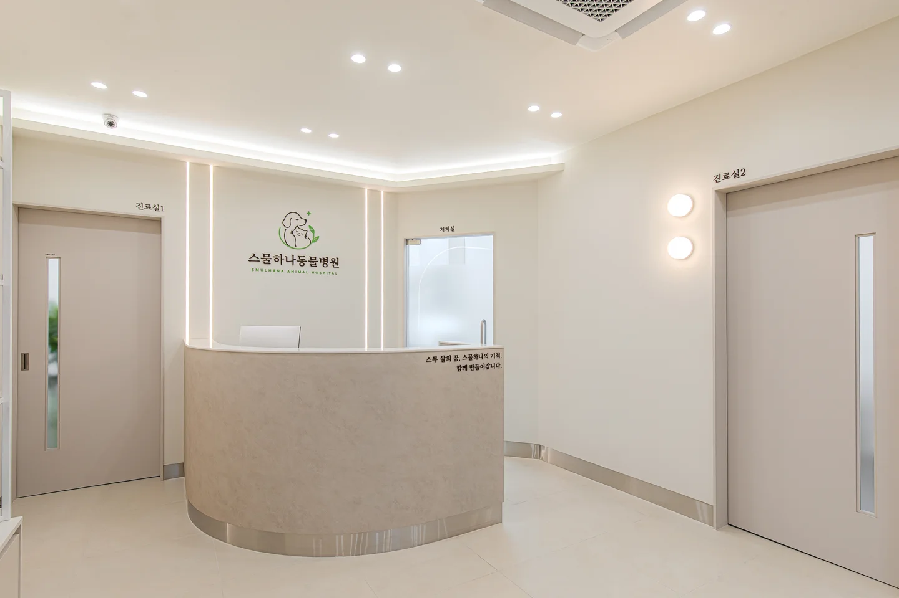
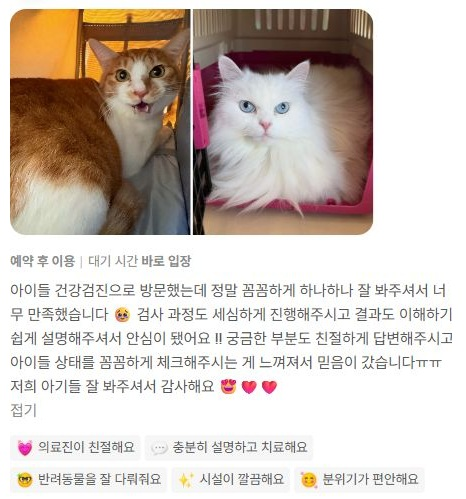
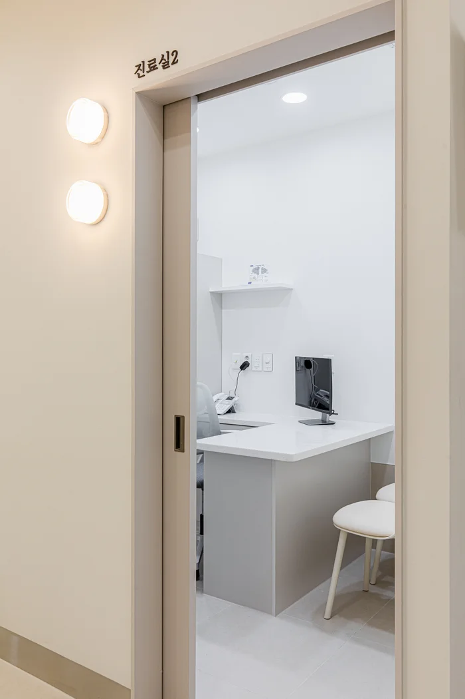
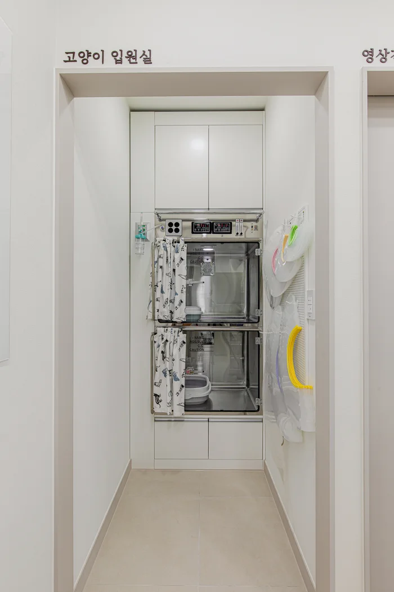
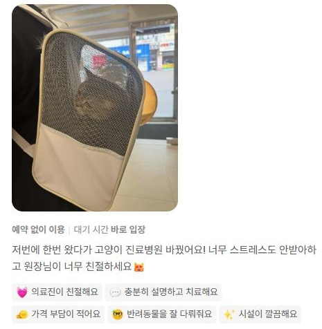
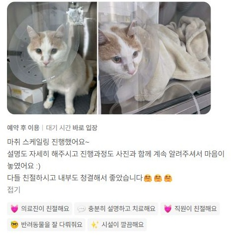
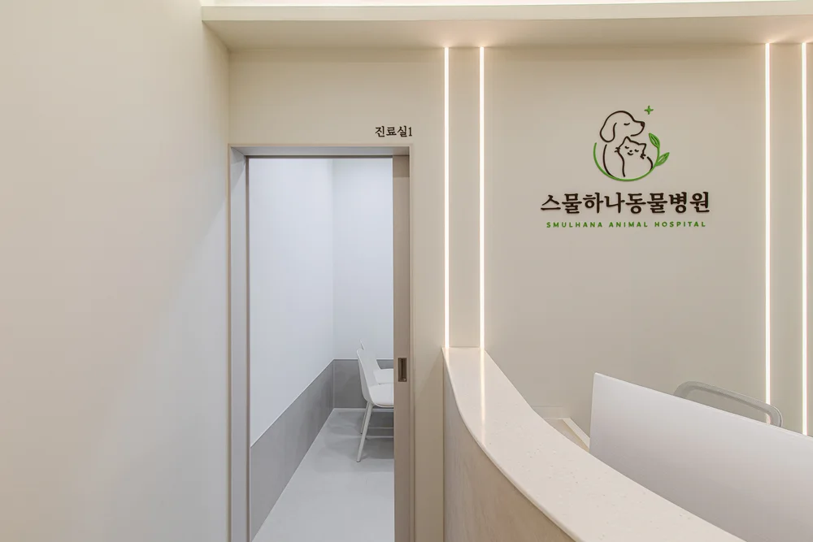

CLINICAL CARE
허지성 대표원장
내과 진료 · 건강관리 상담
- 10년 이상 임상 진료 경험
- 한국고양이수의사회 회원
- 건강검진 · 만성질환 관리

수원 영통 · 망포
스무 살의 바램에
한 살을 더합니다.
오늘의 진료가, 더 건강한 내일로.
OUR APPROACH
작은 변화에 귀 기울이고, 검사 전 이유를 설명합니다.
함께 정한 진료와 꾸준한 관리로
아이의 내일을 준비합니다.
PEOPLE BEHIND THE CARE
임상 경험과 영상 진단을 함께 놓고
한 아이의 건강을 바라봅니다.
CLINICAL CARE
내과 진료 · 건강관리 상담
DIAGNOSTIC IMAGING
초음파 진단 · 영상 평가
FOUR WAYS WE CARE

네이버 방문자 리뷰 · 2026.09.22
개별 보호자의 경험이며 진료 과정과 결과는 아이마다 다를 수 있습니다.
A SPACE FOR CATS
강아지 진료실과 구분된 고양이 전용 진료실,
그리고 분리된 고양이 입원실.



네이버 방문자 리뷰 · 2026.10.03
개별 보호자의 경험이며 진료 과정과 결과는 아이마다 다를 수 있습니다.
SAFETY, STEP BY STEP
스케일링 전 준비부터 회복까지,
과정 하나하나를 소중히 생각합니다.
현재 건강 상태 확인
마취 중 주요 지표 관찰
호흡·의식·체온 확인
모든 마취에는 위험이 있으며, 아이의 상태에 따라 검사와 마취 계획이 달라집니다.


네이버 방문자 리뷰 · 2026.09.22
개별 보호자의 경험이며 진료 과정과 결과는 아이마다 다를 수 있습니다.

THE MEANING OF 21
단지 오래 사는 것만이 아니라,
보호자 곁에서 더 편안한 하루를 보내는 것.
스물하나라는 이름에 담은 마음입니다.
필요한 진료의 우선순위를 함께 정하고,
그 다음의 일상도 함께 고민하겠습니다.
BEFORE YOUR VISIT
이전 검사 결과와 처방 내역이 있다면 가져와 주세요. 평소와 달라진 모습을 촬영한 영상도 진료에 도움이 됩니다.
예정된 검사와 아이의 상태에 따라 준비사항이 다릅니다. 방문 전 전화 또는 카카오톡으로 확인해 주세요.
네, 고양이 전용 진료실과 분리된 고양이 입원장이 있습니다.
일요일과 설·추석 당일은 휴진입니다. 그 외 공휴일 운영은 방문 전 병원에 확인해 주세요.
HOURS & LOCATION
경기도 수원시 영통구 영통로 135
031-8009-0811